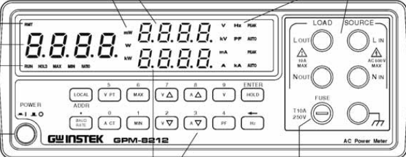

מדידת הספק, מתח, זרם וגורם הספק
ה-GPM-8212 הוא מד הספק דיגיטלי המשמש למדידת הספק פעיל (Watt), מתח וזרם במערכות חד-פאזיות. הוא מציע תצוגה סימולטנית של מספר פרמטרים וגורם הספק (PF).

| מספר | תיאור הפעולה |
|---|---|
| 1 | מייצג את הערכים המינימליים שנמדדו. |
| 2+7 | שינוי טווח המתח (למעלה/למטה). לחיצה ארוכה (2 שניות) עוברת למצב אוטומטי. |
| 3+8 | שינוי טווח הזרם (למעלה/למטה). לחיצה ארוכה עוברת למצב אוטומטי. |
| 4 | תצוגת גורם ההספק (Power Factor). |
| 5 | מציג את הערכים המרביים שנמדדו. |
| 9 | הגדרת החלון לייצוג המתח. |